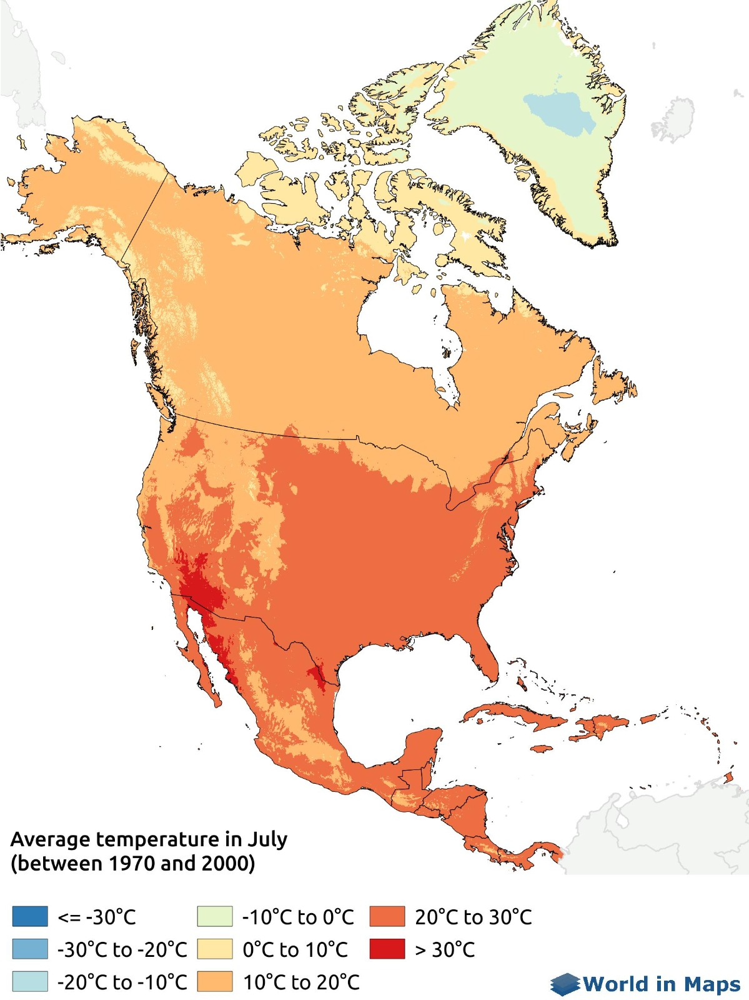
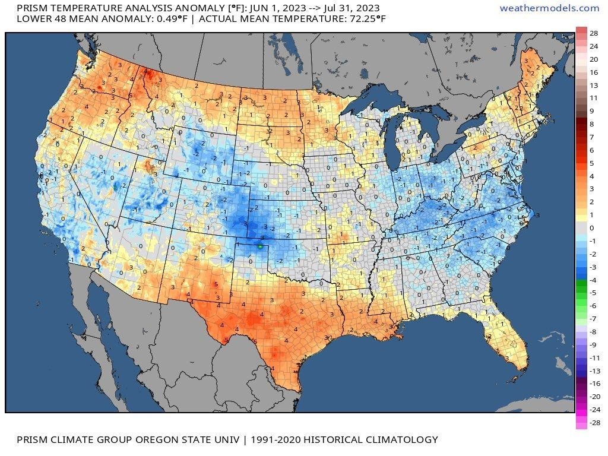

Back
2000 Weather

- The average annual temperature in the United States in 2000 was 58.7°F.
- In 2000, the United States' greenhouse gas emissions were 25.5 gigatons of carbon dioxide (GtCO2).
- The average annual precipitation in the United States in 2000 was 18.39 inches.
- In October 2000, 16.3% of the contiguous United States was affected by drought, down from 36% in August.
- The highest temperature in the United States in 2000 was 104°F on July 16, and the lowest was 8°F on December 12.
- Average sea levels were rising at about 1.7 to 2.0 mm per year.
- Transportation contributed around 29% of emissions, and industry accounted for roughly 22% of emissions.
2024 Weather

- In 2024, the United States' greenhouse gas emissions were 5,057 MtCO2 (million tons of CO2).
- The January-August precipitation total for the contiguous U.S. was 22.93 inches.
- As of September 2024, 28.5% of the U.S. has experienced drought conditions due to varying precipitation.
- The hottest temperature was 91°F on August 26. The coldest high temperature was 49°F on July 2.
- The rate of sea level rise is expected to be about 3 to 4 mm per year.
- Electricity generation is projected to account for about 25-30% of total emissions.
- Transportation is expected to remain around 29% of emissions.
- Industry is anticipated to account for approximately 22% of emissions.